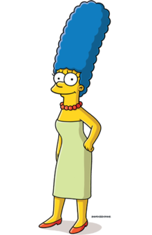

Бартоломью Джо-Джо «Барт» Симпсон — герой мультипликационного сериала «Симпсоны». Наряду с Гомером, один из наиболее известных персонажей шоу. [1]

Гоме́р Джей Си́мпсон — один из главных героев мультсериала «Симпсоны» и отец в одноимённой семье. [2]

Ма́рджори Жакли́н «Мардж» Си́мпсон — постоянный персонаж мультипликационного сериала «Симпсоны». Обычно носит зелёное платье, красные балетки, на шее — ожерелье из искусственного жемчуга и ездит на оранжевом универсале. [3]
